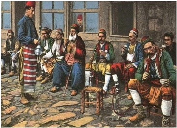

Tütün memleketimize ancak 17. yüzyıl başlarında,
I. Ahmet zamanında İngiliz gemicileri tarafından getirilmiş ve kısa bir zaman içinde, ayak takımından devlet büyüklerine ve ulemaya varınca her sınıf ve tabak arasında yayılmıştı. Sigara kağıdı on dokuzuncu asırda kullanılmaya başlandı; tütün her yerde olduğu gibi bizde de lüle içinde çubukla içilirdi. Zenginler arasında lüle çubuk, aynı zamanda bir ziynet eşyası haline getirilmiş, sanat eseri diyebileceğimiz, kıymetli taşlarla süslü murassa lüleler ve çubuklar yaptırılmıştı.
İlk şiddetli tütün yasağını koyan ve tütün içenlere aman vermeyip ölüm cezasına çarptıran IV. Murat’tır. Bir anarşi devrinde, henüz on dört yaşında iken tahta çıkan bu hükümdar saltanatının ilk yıllarında çok kanlı askerî ihtilâllerle karşılaşmıştı. Öyle ki, bir seferinde gözde yakınları elinden zorla alınarak idam edildikten sonra, kendi tahtı ve hayatı bile tehlikeye düşmüştü. On sekiz yaşına basıp devlet idaresini bizzat eline alınca da baskıcı bir hükümdar olmuştu. Hicrî 1043 (Miladî: 1633) yılı Safer ayının 27. Cuma günü İstanbul’da Cibali Kapısı dışında bir kalafat yerinde bir kalafatçı funda yakıp gemi kalafat ederken, ateş şiddetlenmiş, kol kol yayılarak tam yirmi dört saat içinde İstanbul’un dörtte birini kül etmişti. Yangından sonra halk arasında türlü dedikodular başlamış, bilhassa, tütün keyfi için gidilen kahvehanelerde genç padişahın uğursuzluğundan bahsedilir olmuştu. Bunun üzerine IV. Murat önce kahvehanelerin yıkılmasını ve yerlerine bekâr, nalbant ve debbağ odaları yaptırılmasını emretmiş, tütün içilmesini de yasak ettirerek tellallar vasıtasıyla tütün içenlerin aman verilmeyip idam edileceklerini ilân ettirmişti. Devrin ulemasından ve mutaassıp sofulardan Kadızade Mehmet Efendi de müthiş bir tütün düşmanı idi ve Padişahın da bu zata karşı hürmeti vardı. Kadızade Efendi Sultan Murat’ı tütün içenlere karşı amansız davranmaya teşvik edenlerden biriydi. İlk zamanlarda, halk tütün yasağına pek kulak asmamıştı, fakat bir duman keyfi uğruna kelle verenlerin sayısı kabardıkça, başta İstanbul gelmek üzere bütün imparatorluk halkını ciddî bir endişe aldı. Öyle ki, hemen her sabah sokaklarda, kırk-elli ceset görülüyordu. Cellâtlar tütün içerken yakalananların başlarını vurup kellelerini koltuklarının altına bırakıyor, padişahın emri gereği olarak da ne için öldürüldüklerini anlatmak için, tütün çubuğunu da kesik başın ağzına veriyorlardı. Tütün içenleri arayıp yakalamak için bir hafiye teşkilâtı kurulmuştu. Bunlar geceleri bir hırsız gibi şüphelendikleri evlerin, bekâr odalarının damlarına çıkarlar, bacaları koklayarak tütün kokusu ararlardı. Çünkü tiryakilerin (bir baskını olursa tütün içtikleri yere tütün dumanı ve kokusu sineceğinden) çubuklarını evlerinin ocakları içinde tüttürdükleri söyleniyordu. Bu hafiyeler yazın da mesire yerlerine dağılırlar, kırlarda çayırlarda tütün içen olur mu diye gözetlerlerdi. Hatta bizzat padişah yaz demeden kış demeden, gece gündüz kılık değiştirip gezerdi.
Tütün, içki, afyon gibi bütün keyif verici madde yasakları bu hükümdarın ölümüne kadar cezası idam olmak üzere bütün şiddetiyle devam etmesine rağmen keyif bağımlılığının önüne geçilememişti. İçe çekilecek birkaç nefes duman için ölüm tehlikesini göze alan tiryaki kahramanlar ve fedailer her zaman, her yerde bulunmuştu. Öyle ki, örneğin 1638 yılında, IV. Murat Bağdat seferine çıktığında, kendi kumandası altındaki Ordu-yi Hümayun’da bile gizli olarak tütün içenler pek çoktu. Ordu Üçpınar menzilinde konakladığında, gece kuytu bir yere çekilip tütün içen on bir kişi, kılık değiştirmiş dolaşan IV. Murat tarafından bizzat yakalanmış ve derhal idam edilmişlerdi. İçlerinden biri
Ütücüzade lakabıyla tanınan oldukça yüksek bir memur, biri de Kapıcıbaşı idi. Reha menzilinde de ikisi yeniçeri olmak üzere on dört tütün tiryakisi yakalanmış ve gündüz ordugâhta herkesin gözü önünde katledilmişlerdi. Halep’te yirmi kişi idam olunmuştu. Ordu ilerledikçe, her menzilde beşer, onar, yirmişer idam ediliyor, ibret olmak üzere, asılanlardan bazılarının çubukları ağızlarına verilerek teşhir ediliyordu. Fakat bu ölüm cezaları kimseye ibret olmuyor, sadece ortalığa dehşet saçıyordu.
Naima şöyle anlatır: “Bu tütünü içenlerin kimi orduda eli ve ayağı kırılıp siyaset olunur ve kiminin eli ve ayağı Otağ-ı Hümayun önünde kırılır, kimin boynu vurulurdu. Kimini dört parça ederlerdi.”
Bağdat Seferi sırasında bir gün gayet güzel cins bir at, üzerinde son derece kıymetli eyer takımı ile bağlandığı yerden boşanmış, başı boş gezen dolaşan padişahın otağı önüne kadar gelmişti. Orada yakalanan hayvan, sahibinin bulunması için tellala verilip ordu içinde gezdirilmiş ve kimse hayvana sahip çıkmamıştı. Bunun üzerine şüphe uyanmış, üzerindeki eyer araştırılmış, iç tarafta, gizli bir göz içinde bir tütün lülesi ve bir kese tütün bulunmuştu. Sahibinin başı korkusundan hayvanı feda ettiği anlaşılmıştı.

Kahvehanede nargile ve tütün içenler